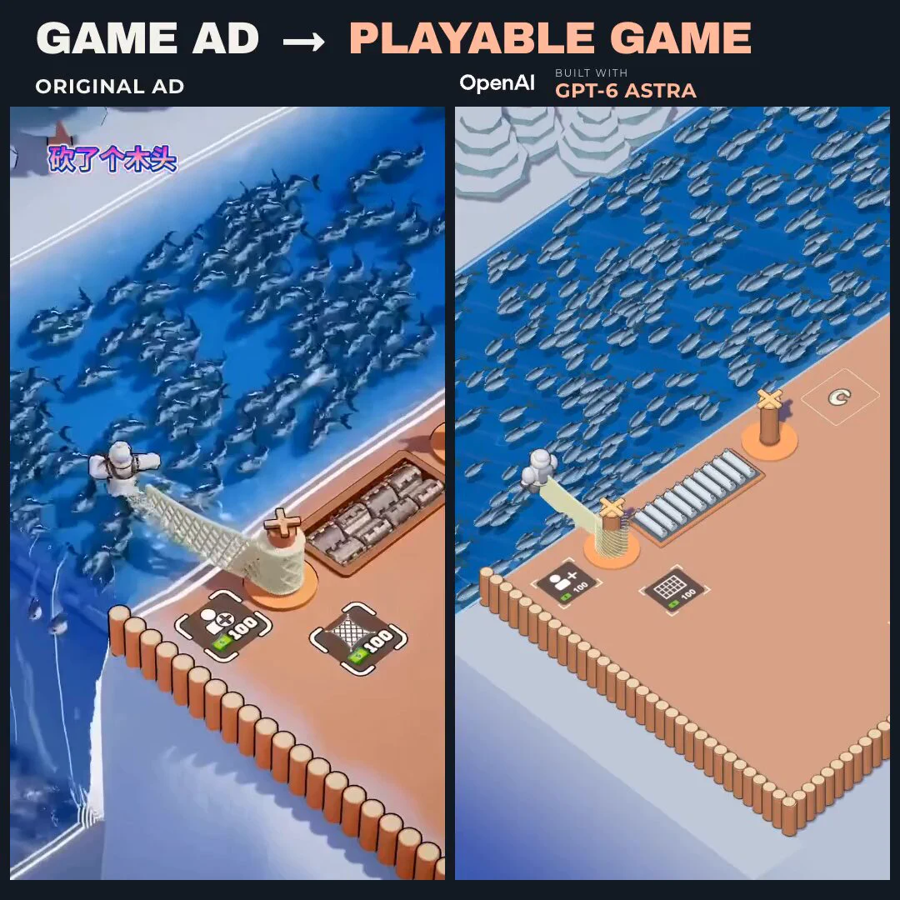

Threads｜GPT-6 Astra 自動製作可玩遊戲：從手遊騙流廣告到 AI 遊戲原型

一句話摘要
這則 Threads 貼文討論一種很有趣的 AI 遊戲製作方向：讓模型先觀察「手遊騙流廣告」中的玩法，再自行產生遊戲原型、建模、測試與調整，最後把原本只存在於廣告裡的遊戲自由度做成可玩的版本。
原始貼文說了什麼
Threads 使用者 **prompt_case** 分享一則影片，標題是「GPT-6 Astra 實現了手遊騙流廣告中的遊戲自由」。貼文沒有提供完整操作教學，而是作者的推測：
> 把廣告影片放進 Codex，讓它自行觀看分析遊戲玩法，使用 Headless Blender modeling，並在 internal browser 自己監督遊戲細節、調整參數和遊玩體驗。
這段描述應理解為社群觀察與推測，不是已被官方文件證實的標準流程。
可能的工作流程
若把貼文想法拆成可操作的概念，大致可分成四個階段：
- **從影片理解玩法**：辨識角色、場景、敵人、碰撞、資源、關卡目標與玩家操作。
- **建立可執行原型**：把影片裡的核心互動簡化成遊戲邏輯，而不是一開始就追求完整商業遊戲。
- **生成或處理素材**：使用 3D 建模、2D 圖像、sprite、場景物件或程式化幾何圖形，快速湊出可測試版本。
- **在瀏覽器中反覆測試**：觀察遊戲是否能載入、角色是否能操作、碰撞與關卡流程是否合理，再依結果修改參數。
其中最值得注意的不是「一次生成完整遊戲」，而是模型能否形成「觀察—實作—測試—修正」的閉環。
貼文串中的其他遊戲案例
原貼文下方的相關串文也展示了幾個方向：
- 使用者 **akirayeh** 描述以一句「我想做霓虹錄音帶的 2D 橫向捲軸遊戲」作為起點，逐步加入角色移動、二段跳、衝刺、吉他音波攻擊、收集錄音帶與 Boss 戰；後續更新還加入敵人攻擊、蹲下閃避、蓄力重擊與能量大招。
- **brainness.ai** 分享貓雨射擊遊戲，提到地圖中的隨機設施、角色染色，以及賽車探索與賽道等延伸嘗試。
- **faustforgame** 提到以 GPT-6 Astra 製作類似《蒼穹紅蓮隊》風格的網頁遊戲，並表示已開放試玩。
以上都是 Threads 串文中的使用者分享，成果細節、實際使用模型與程式碼均未在本條目中獨立驗證。
「騙流廣告」為什麼特別適合拿來做原型？
這類廣告通常把一個非常直觀、非常爽快的互動濃縮在幾十秒內，例如瞄準、堆疊、救援、躲避、升級或物理碰撞。它們具有幾個適合 AI 原型製作的特性：
- 核心規則很容易從畫面中描述出來。
- 玩家目標通常單純而明確。
- 互動回饋強，便於用瀏覽器測試。
- 可以先做單一場景，再逐步加上關卡、敵人與成長系統。
但「廣告中的爽點」不等於完整遊戲。真正可玩的版本仍需要處理難度曲線、關卡內容、效能、輸入、音效、存檔、留存與版權等問題。
查核與使用限制
- **已確認**：Threads 貼文存在，作者為 `prompt_case`；貼文確實提到 GPT-6 Astra、Codex、Headless Blender 與 internal browser。
- **來源可追溯**：貼文附有 `buildingadlicio` 的 X 貼文連結，另有多則相關 Threads 遊戲展示。
- **尚待確認**：GPT-6 Astra 是否為正式公開產品、它實際支援哪些工具，以及貼文影片的完整製作流程。
- **不能直接推論**：不能只憑影片或轉述，宣稱 AI 已能穩定從任意廣告自動產製商業級遊戲。
- **實務注意**：若參考廣告或既有遊戲，應避免直接複製角色、素材、品牌、關卡設計與受保護的視覺識別。
可借鑑的實驗設計
如果要自行測試這種工作流，可以先選一段 10–30 秒、規則單純的遊戲廣告，明確要求 AI 輸出：
- 遊戲狀態與核心規則清單。
- 最小可玩版本的輸入與勝負條件。
- 不依賴原作素材的替代視覺方案。
- 可在瀏覽器執行的第一版原型。
- 一組由 AI 自己執行的測試案例，例如移動、碰撞、重啟、通關與失敗。
這樣比較容易判斷 AI 的價值究竟來自「生成程式碼」，還是已經能理解玩法並進行有效的互動式迭代。
來源
- Threads 分享連結：<https://www.threads.com/share/BCKqok6m-h/>
- Threads canonical：<https://www.threads.com/@prompt_case/post/Dc7jE7HDSis>
- 貼文引用的 X 來源：<https://x.com/buildingadlicio/status/2096111709496680842>
- 相關遊戲案例：<https://www.threads.com/@akirayeh/post/Dc77c6OCuo8>、<https://www.threads.com/@brainness.ai/post/Dc8CaLyAU1u>、<https://www.threads.com/@faustforgame/post/Dc8lSkLDET3>